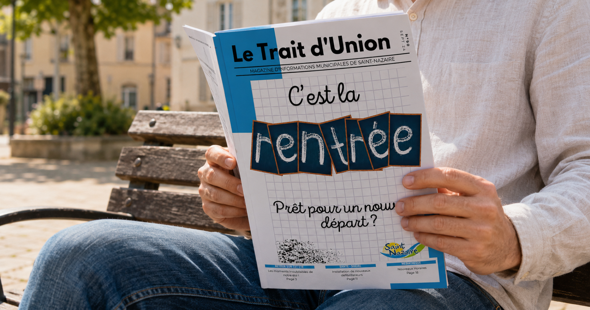

Le Trait d’Union - Journal municipal de Saint-Nazaire
StageÉdition printRédactionMise en pageDirection artistique
Mission réalisée pendant mon stage de fin d'études BUT 3, en parallèle de la communication de la médiathèque.
Deux jours par semaine à la mairie de Saint-Nazaire, le journal municipal était l'une des missions de plus
grande ampleur parmi l'ensemble de mes missions.

Le défi
Le Trait d'Union est le rendez-vous trimestriel entre la mairie et les habitants : 24 pages qui couvrent trois
mois de vie locale. Le format précédent existait mais sans vraie mise en page, des blocs de texte et des
photos posés les uns à côté des autres sans hiérarchie ni cohérence visuelle. Et la production dépendait d'un
flux d'informations éclaté : associations, services municipaux, événements. Il fallait moderniser la maquette
tout en tenant la deadline, avec des contenus qui arrivaient au fil de l'eau.
Ma réponse
J'ai pris en charge le journal de bout en bout. Nouvelle mise en page et direction visuelle par rapport aux
éditions précédentes. Coordination par mail avec les associations de la ville qui m'envoyaient photos et
textes. Quand les contenus manquaient, j'ai écrit les articles moi-même à partir des informations disponibles
: travaux en cours, nouveaux équipements comme l'ouverture d'un parc. 24 pages conçues, rédigées et mises en
page seul sur Canva, prêtes à l'impression.
Impact
Un journal municipal de 24 pages livré, avec un format visuel renouvelé par rapport aux éditions précédentes.
Un exercice complet d'édition print : rédaction, direction artistique, coordination des contributeurs et
production finale.